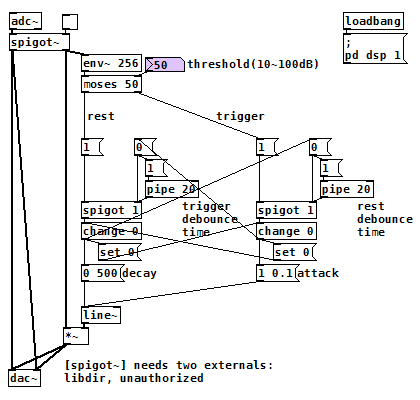

ノイズゲート（Pure Data パッチ）
2017年11月15日 カテゴリー：Pure Data
Pure Data(Pd)には[threshold~]という音の始まり（立ち上がり、trigger）と終わり（立ち下がり？、rest）を検出できる便利なオブジェクトがあります。これを使うと簡単にノイズゲートを作れると思ったのですが、音声信号をそのままつなぐとtriggerとrestが頻繁に入れ替わってしまいます。この現象はおそらく[threshold~]の内部処理がエンベロープ検出になっていないために起こっているので、[env~]を入れることで対処できます。ただ更に検討していくと、[threshold~]は64サンプル分余計に処理時間がかかってしまう場合があることがわかったため、結局[env~]と[moses]でノイズゲートを作ることにしました。
（このパッチをダウンロード）
threshold以上になった信号は[moses]により右側に送られ、[change]でtriggerを検出します。検出後、左側の[change]に[set 0]が送られrestの受付を開始しますが、同時に左側の[spigot]が一定時間閉じられるため、restをすぐには検出しないようになっています。これによりtriggerとrestの短時間での繰り返しが防げます。threshold未満のときは左側に信号が送られ、同様のことが起こります。
立ち上がり時間（attack）はできるだけ短くしたいのですが、0にするとプチッというノイズが発生することがあるため、とりあえず0.1msというごく短い設定です。立ち下がり時間（decay）は500msと長い設定なのでノイズ遮断のキレが悪いですが、音の消え際を自然にするためにはやむを得ないでしょう。
（※パッチ内容を把握しきれていませんが、Isaac(139)さんのノイズゲートの方が高機能だと思います。→139 not found [Puredata]Noise Gate）
バックグラウンドのノイズを消すという機能は、[rfft~]を使って周波数解析すれば実現できるかもしれません。しかしCPU負荷と処理時間の問題があるため、難しいだろうと思います。